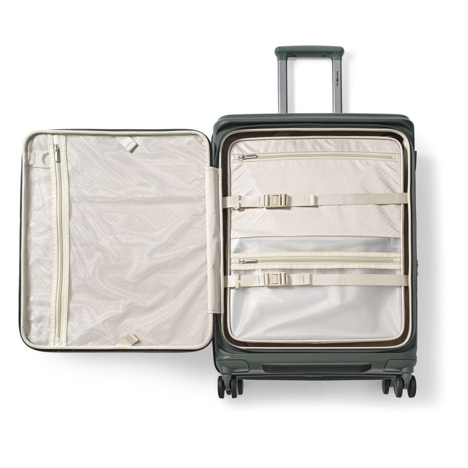
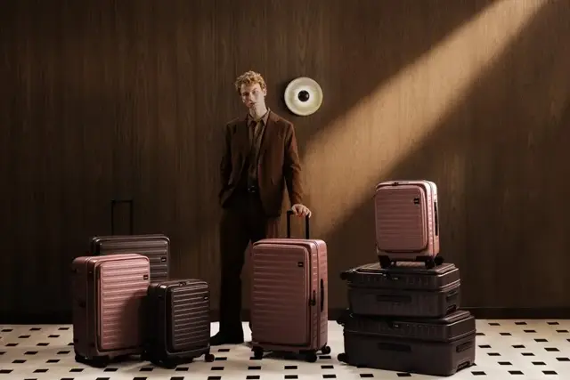
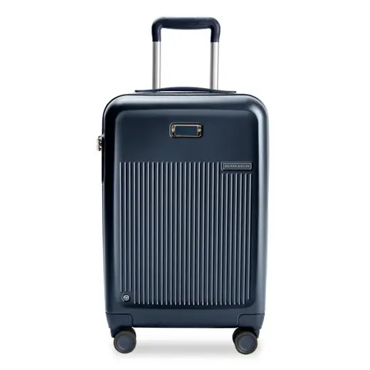
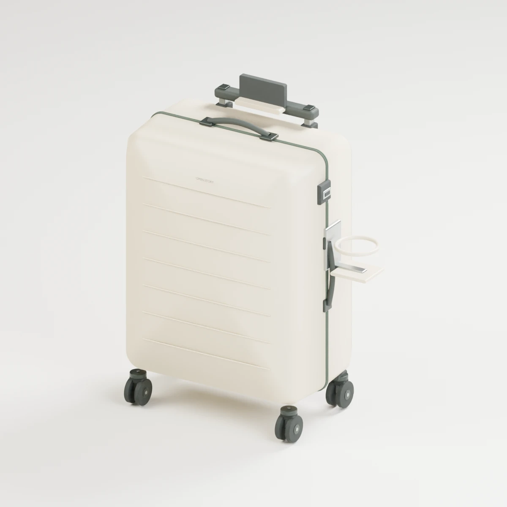
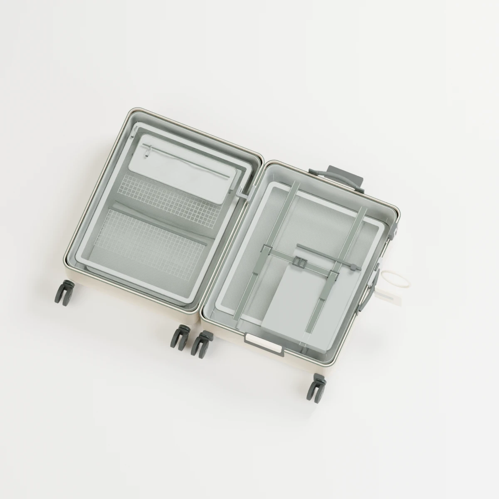

Samsonite · Paralux Medium Spinner · Olive
Dual access and packing organization
Model, size and color matched; manufacturing revision unstated.
Source · saved 3 Nov 2026Find an opportunity. Borrow a useful idea. Build, inspect and cost your concept.
Market evidence → development hypothesis
All 14 saved directions are here, alongside the model builder. A proposed opportunity is not proof of an assortment gap.
Inspect the product photographs and source notes first. These are references for specific features; the 3D concept below is a separate proposed design.
Browse features across all brands ↓
Dual access and packing organization
Model, size and color matched; manufacturing revision unstated.
Source · saved 3 Nov 2026
Accessible wheel replacement and parts support
Collection image; exact priced size, color and revision not verified.
Source · saved 3 Nov 2026
Expansion and controlled compression
Collection image; exact priced size, color and revision not verified.
Source · saved 3 Nov 2026Real models. Specific benefits. Your selection.
Tick a feature to add it to your concept and BOM. Open its source models to see what the real product claims. “Brief + BOM only” means the idea is saved but the 3D model does not simulate it.
Custom requirements save to the brief and costing table. They do not automatically create new geometry.
Fixed sand-color concept examples rendered from the actual 3D geometry: cup holder, phone cradle, USB-port placement, mesh pockets and laundry pouch. These illustrate material and lighting quality; they do not update with your choices. Use the interactive model below to inspect your configuration.


Choose a traveler profile, then inspect the exterior, inside or exploded view.

Drag to inspect the shell, closure, carry handles and wheel hardware.
Interactive development render · original geometry with model-inspired additions. Base dimensions exclude projecting accessories. Parts and mechanisms require engineering.
Loading the 3D model. The Blender render remains available.
Your component-level planning sheet
Base components and selected features appear automatically. Add any missing component with the custom requirement form. Enter your supplier quotes or planning assumptions; blank means unknown.
| Component / requirement | Qty per case | Unit cost | Extended | Quote or assumption |
|---|
The original, your revision, and the reason for every change
Choose the retail product you want to develop from. The revised column follows your current 3D choices.
The 3D scene shows your development concept. It is not a replica or an interactive model of the selected retail product.
| Specification | Original retail product | Your revised concept | What changes & why | Proof still needed |
|---|
The base sage cabin concept is a separate development starting point. It is not the original Target suitcase.
Development details
See the selected change, intended benefit, trade-off, what the 3D model represents, and the work needed to prove it. Features switched off remain visible as exclusions.
The concept has design targets. Directory prices and photos remain saved, dated research evidence.